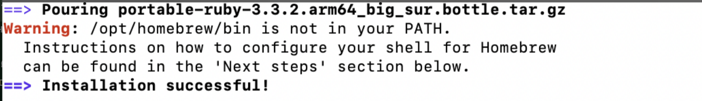

Using RStudio
This page explains how to set up RStudio in order to access and use the COMET notebooks.
If you are using RStudio, you will want to ensure that you use the .Rmd or .qmd (R Markdown or Quarto) versions of the notebooks, not the .ipynb versions. Currently, RStudio does not natively support the Python notebook format.
1. Installing R
The first thing we’ll need to do is install R onto our computer.
- Head to cran.r-project.org for windows and press
Download R-4.4.0 for Windows - Select
Okay > Nextand select your destination location. - Select the components
Main files,64-bit filesandMessage translations. Then, press next. - Select the toggle
No (acccept defaults)and press next. - Select both
save version number in registryand `associate R with .RData files. - Once the installation is complete, press
Finish.
- Head to cran.r-project.org for macOSx and select the release (on the left-hand side) suited for your device type.
- Open the installer and select
continue>continue>continue>agree>install.
2. Installing RStudio
We’ll now install RStudio, our IDE of choice.
3. Installing package compilers
We’ll need to install a package compiler to activate the renv.lock, a package bundle made specifically for the COMET notebooks.
RTools is a program that allows us to compile R packages from source.
In the Rtools installer, press Next > Next (ensuring that both check boxes are ticked) > Install.
For Mac, you’ll need to install Xcode Command Line Tools instead.
- Open the Mac terminal. To do so, click on the spotlight icon in the menu bar and search for “terminal.”
- Install Homebrew: Homebrew is a package manager for MacOS which we will use to install Xcode. In the Mac terminal, paste:
/bin/bash -c "$(curl -fsSL https://raw.githubusercontent.com/Homebrew/install/HEAD/install.sh)"
This might prompt you to enter your user password, which is the password that you use to sign into your device (Note that for privacy reasons you won’t be able to see the characters that you type). Once you’ve entered your password, press enter. This may take a while to run.
- You should get an output similar to this:

Notice the warning. To fix this, we’ll need to add our installation to the system path. In the terminal, run:
(echo; echo 'eval "$(/opt/homebrew/bin/brew shellenv)"') >> ~/.zprofile
followed by:
eval "$(/opt/homebrew/bin/brew shellenv)"
which will add the required path to the installation.
- Verify installations: to check that Xtools is installed, run
$ brew doctorin the termial. This should display the output “Your system is ready to brew.”
4. Downloading and opening the COMET notebooks
4.1. Downloading the COMET notebooks
- Open comet.arts.ubc.ca and, in the top right corner, select
Launch Comet>Launch Locally. This will download a .zip file to your computer. - Open the file in file explorer and extract the zip folder to your preferred destination.
4.2. Importing the COMET notebooks into RStudio
We can now import the COMET notebooks into RStudio. When we say “import”, what we really mean is setting the working directory. The working directory is the location in your computer where you are working in. Unlike VSCode and other high-level IDEs, setting our working directory is done manually by specifiying our location using the R console.
- Locate the downloaded COMET notebooks and copy the absolute file path by right-clicking on the folder and pressing
copy as path. If you are on a Mac, hold the option key and selectCopy (file name) as Pathname. - Locate the current working directory in RStudio by entering
getwd()in the R console (bottom left of the screen).
- We’ll now set our working directory to the COMET folder. To do so, enter the following command into the console:
setwd("C:/your/file/path/goes/here")
Where “C:/your/file/path/goes/here” is the absolute file path you copied earlier, with the backshashes (\) set to forward slashes (/). For example, the file path (on windows) C:\users\i_love_econ will be changed to C:/users/i_love_econ.
RStudio requires file paths to have a forward slash instead of a back slash. If you don’t adjust the absolute file path accordingly, you won’t be able to set/change your working directory.
To check that you’ve got the right working directory, run getwd() again.
4.3. Changing your working directory in the files tab.
On the right-hand bottom side of Rstudio there is a display that shows your files. If you’d like to change it to your current working directory, press the small button ... button called “go to directory”. This will allow you to pick the COMET modules folder from your file system and navigate it from within R.
5. Activating the COMET environment
We’re now ready to activate the COMET environment in RStudio.
In the R console, enter the following line of code:
install.packages("renv"). This will install therenvpackage, which will allow RStudio to read the custom environment file for the notebooks.In the R console, run
renv::restore(). You should get a message that reads: “It looks like you’ve called renv::restore() in a project that hasn’t been activated yet. How would you like to proceed?”. Press1. This should restart R. If it doesn’t, runrenv::activate().To check that everything is installed properly, run
renv::status(). This command will give you a the list of packages in your environment (Note that this might take some time to run).